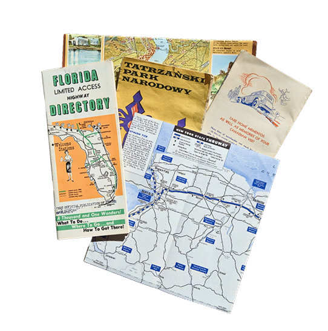
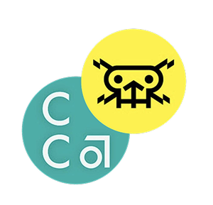

ABOUT ME
hello,
I'm Anny Long, raised in the Bay Area and currently based in San Francisco. I've recently graduated from CCA in Graphic Design. I'm an interdisciplinary designer interested in products, data visualization, systems thinking and UX design.
Collaboration energizes me; I thrive working across teams with many disciplines—this has led to various projects such as Google Tone, community exhibitions, and The Children's Creativity Museum.
In my downtime, I'm an avid photographer, traveler, map collector and lover of all things pixel & coffee.

Old maps get me fired up.
My friends love
my latte art!

Graduated ’26